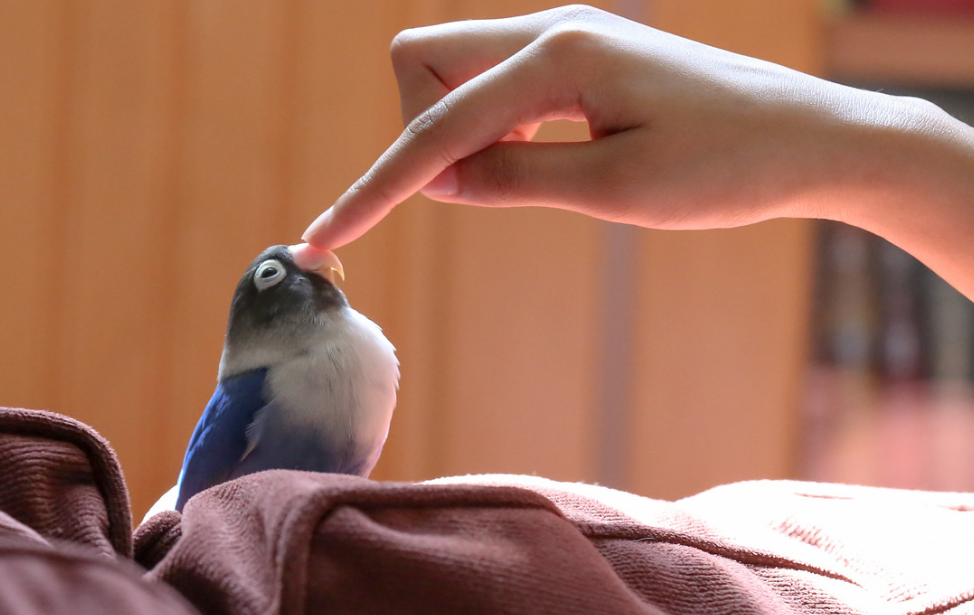

About Me
I am an undergraduate student majoring in Intelligent Systems Engineering with a concentration in Cyber-Physical Systems at Indiana Univeristy Bloominton. I am also pursuing a mathematics minor.
My interests include robotics, human-robot interaction, space exploration, and control systems. I was really involved in my high schools FIRST robotics team, and am working on starting a Vex U team here at IU!
My FAVORITE video games are the Portal series! I have played through both multiple times.
Outside of technology, I am a member of the Indiana University Marching Hundred marching band, and a sister and secretary of the Rho chapter of Tau Beta Sigma (the National Band Sorority). I have played piccolo and flute since fifth grade, and music is a big part of my life!
I am also a huge bird nerd. Here is my lovebird, Beaker.
